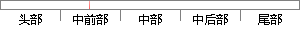

通过固定超声波发射点，利用射频信号作为时间标记，实现了对移动结点的定位；
片段位置图

相似结果|
相似片段 1：接收模块。利用三点决定一个平面原理设定三个固定超声波发射点。用射频信号的发射和接收时间作为计时点，根据固定节点超声波发射和移动节点接收到超声波之间的时间差确定固定节点和移动节点之间的间距，实现对移动
|
※ 片段修改建议 ※
近似词参考：- 通过：经由过程
- 固定：牢固
- 利用：操纵 哄骗 使用 行使 应用
- 信号：旌旗灯号
- 时间：时候
- 标记：标识表记标帜 标志 符号
- 移动：挪动
系统自动生成语句： 经由过程牢固超声波发射点，操纵射频旌旗灯号作为时候标识表记标帜，实现了对挪动结点的定位；
注：本片段修改建议为系统自动生成，仅供参考。